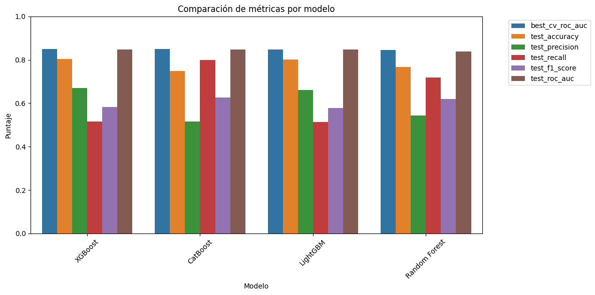
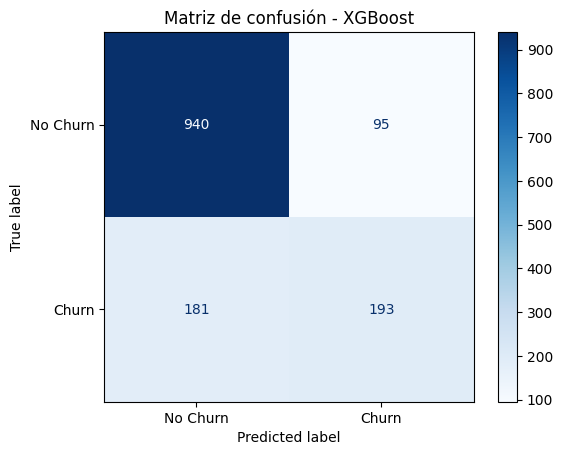
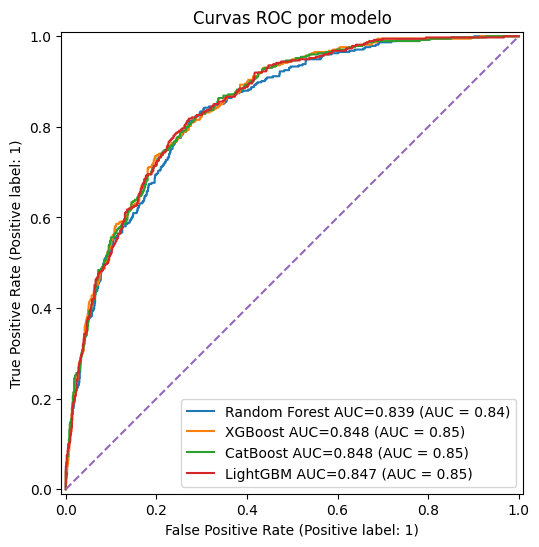
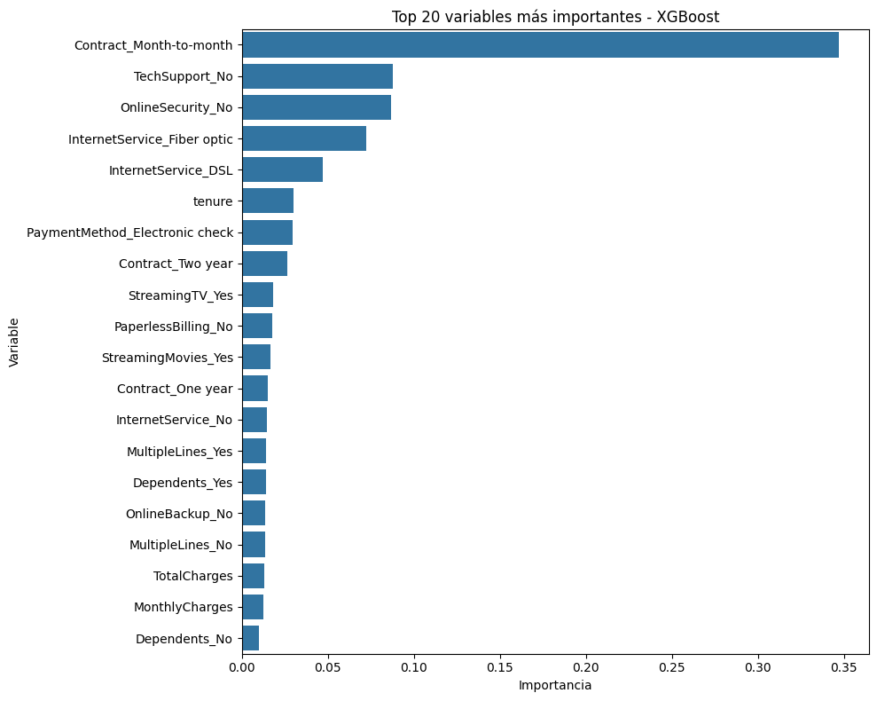

Proyecto Integrador 5.12 — Capítulo 5: Árboles e Interpretabilidad#
Notebook 2: Modelado Predictivo con Pipeline y GridSearchCV#
Asignatura: Machine Learning Proyecto: Predicción de Churn en Telecomunicaciones Algoritmos: Random Forest · XGBoost · CatBoost · LightGBM Fecha: 2025
Objetivo del Notebook#
Este notebook implementa el flujo completo de modelado predictivo para el problema de clasificación de churn en telecomunicaciones. El proceso sigue las mejores prácticas de Machine Learning aplicado:
Preprocesamiento estructurado mediante
Pipelinede scikit-learn conSimpleImputer,StandardScaleryOneHotEncoder.Optimización de hiperparámetros con
GridSearchCVy validación cruzada estratificada de 5 pliegues.Entrenamiento y evaluación de 4 algoritmos basados en árboles: Random Forest, XGBoost, CatBoost y LightGBM.
Comparación rigurosa mediante métricas múltiples: Accuracy, Precision, Recall, F1-Score y AUC-ROC.
Selección y serialización del mejor modelo para su uso posterior en la API y el análisis de interpretabilidad.
Análisis de importancia de características para comprender qué variables guían las predicciones.
Modelado predictivo - Telco Customer Churn#
En este notebook se construyen modelos de clasificación para predecir la probabilidad de abandono de clientes en una empresa de telecomunicaciones.
El flujo de trabajo incluye:
Carga del dataset limpio.
Separación de variables predictoras y variable objetivo.
División entre entrenamiento y prueba.
Construcción de pipelines de preprocesamiento.
Entrenamiento de modelos con GridSearchCV.
Evaluación con métricas de clasificación.
Comparación de modelos.
Selección y guardado del mejor modelo.
Análisis de importancia de características.
import pandas as pd
import numpy as np
import matplotlib.pyplot as plt
import seaborn as sns
from pathlib import Path
import joblib
import json
import warnings
warnings.filterwarnings("ignore")
from sklearn.model_selection import train_test_split, StratifiedKFold, GridSearchCV
from sklearn.compose import ColumnTransformer
from sklearn.pipeline import Pipeline
from sklearn.preprocessing import OneHotEncoder, StandardScaler
from sklearn.impute import SimpleImputer
from sklearn.metrics import (
accuracy_score,
precision_score,
recall_score,
f1_score,
roc_auc_score,
classification_report,
confusion_matrix,
ConfusionMatrixDisplay,
RocCurveDisplay
)
from sklearn.ensemble import RandomForestClassifier
from xgboost import XGBClassifier
from catboost import CatBoostClassifier
from lightgbm import LGBMClassifier
pd.set_option("display.max_columns", None)
pd.set_option("display.max_rows", 100)
# Curvas ROC comparativas en una sola figura
import matplotlib.pyplot as plt
from sklearn.metrics import RocCurveDisplay, roc_auc_score
fig, ax = plt.subplots(figsize=(9, 7))
colors = {
"Random Forest": "#e74c3c",
"XGBoost": "#27ae60",
"CatBoost": "#f39c12",
"LightGBM": "#8e44ad"
}
for model_name, m in best_estimators.items():
y_proba_m = m.predict_proba(X_test)[:, 1]
auc = roc_auc_score(y_test, y_proba_m)
RocCurveDisplay.from_predictions(
y_test, y_proba_m,
name=f"{model_name} (AUC = {auc:.4f})",
ax=ax, color=colors.get(model_name, "blue"),
linewidth=2
)
ax.plot([0, 1], [0, 1], "k--", linewidth=1.2, label="Clasificador Aleatorio (AUC = 0.50)")
ax.set_title(
"Curvas ROC — Comparación de Modelos\n(Conjunto de Prueba, n=1,409)",
fontsize=14, fontweight="bold"
)
ax.set_xlabel("Tasa de Falsos Positivos (1 - Especificidad)", fontsize=12)
ax.set_ylabel("Tasa de Verdaderos Positivos (Sensibilidad)", fontsize=12)
ax.legend(loc="lower right", fontsize=10)
ax.grid(True, alpha=0.3)
ax.set_xlim([-0.02, 1.02])
ax.set_ylim([-0.02, 1.02])
plt.tight_layout()
plt.show()
Interpretación de las Curvas ROC#
La curva ROC (Receiver Operating Characteristic) representa el trade-off entre la Tasa de Verdaderos Positivos (sensibilidad) y la Tasa de Falsos Positivos a diferentes umbrales de clasificación. El Área Bajo la Curva (AUC-ROC) cuantifica la capacidad discriminativa global del modelo: un valor de 1.0 indica clasificación perfecta, mientras que 0.5 indica desempeño equivalente a una clasificación aleatoria.
Los cuatro modelos presentan curvas ROC muy similares con AUC entre 0.839 y 0.848, lo que indica que todos capturan los patrones de churn de forma competente. Las curvas se ubican claramente por encima de la diagonal de referencia (clasificador aleatorio), confirmando su valor predictivo.
La diferencia de AUC entre el mejor (XGBoost, 0.8481) y el peor modelo (Random Forest, 0.8392) es de apenas 0.009 puntos, sugiriendo que el dataset y sus señales predictivas dominan el desempeño más que las diferencias entre algoritmos. Sin embargo, XGBoost mantiene una ventaja consistente y fue seleccionado como el modelo final para despliegue.
# Matrices de confusión para todos los modelos (seaborn heatmap)
import matplotlib.pyplot as plt
import seaborn as sns
from sklearn.metrics import confusion_matrix
fig, axes = plt.subplots(2, 2, figsize=(14, 11))
axes = axes.flatten()
model_order = ["Random Forest", "XGBoost", "CatBoost", "LightGBM"]
for i, model_name in enumerate(model_order):
if model_name not in best_estimators:
continue
m = best_estimators[model_name]
y_pred_m = m.predict(X_test)
cm = confusion_matrix(y_test, y_pred_m)
# Calcular porcentajes
cm_pct = cm / cm.sum() * 100
labels = [[f"{v}\n({p:.1f}%)" for v, p in zip(row_v, row_p)]
for row_v, row_p in zip(cm, cm_pct)]
color = {"Random Forest": "Blues", "XGBoost": "Greens",
"CatBoost": "Oranges", "LightGBM": "Purples"}.get(model_name, "Blues")
sns.heatmap(
cm, annot=labels, fmt="", cmap=color,
xticklabels=["No Churn", "Churn"],
yticklabels=["No Churn", "Churn"],
ax=axes[i], linewidths=0.5, linecolor="gray",
cbar_kws={"shrink": 0.8}
)
axes[i].set_title(f"{model_name}", fontsize=14, fontweight="bold", pad=10)
axes[i].set_xlabel("Predicción", fontsize=11)
axes[i].set_ylabel("Valor Real", fontsize=11)
plt.suptitle(
"Matrices de Confusión — Comparación de Modelos\n(Conjunto de Prueba, n=1,409)",
fontsize=15, fontweight="bold", y=1.01
)
plt.tight_layout()
plt.show()
Interpretación de las Matrices de Confusión#
Las matrices de confusión revelan el comportamiento detallado de cada modelo ante los dos tipos de error posibles:
Falsos Negativos (FN): clientes que realmente abandonarán pero el modelo predice que no. Este es el error más costoso para el negocio, pues representa clientes en riesgo no atendidos.
Falsos Positivos (FP): clientes que no abandonarán pero el modelo predice que sí. Este error genera costos operacionales por acciones de retención innecesarias.
XGBoost presenta la mayor cantidad de Verdaderos Negativos (correctamente clasificados como No Churn), lo que le confiere una Precision más alta. CatBoost detecta más Verdaderos Positivos (clientes con churn real correctamente identificados), lo que se refleja en su mayor Recall.
La elección entre estos trade-offs depende de los costos operacionales del negocio. Para este proyecto se seleccionó XGBoost por su superior AUC-ROC global, que es independiente del umbral de clasificación y constituye la métrica más robusta para comparar modelos ante el desbalance de clases.
BASE_DIR = Path.cwd().parent if Path.cwd().name == "notebooks" else Path.cwd()
DATA_PATH = BASE_DIR / "data" / "processed" / "telco_churn_clean.csv"
df = pd.read_csv(DATA_PATH)
df.head()
| customerID | gender | SeniorCitizen | Partner | Dependents | tenure | PhoneService | MultipleLines | InternetService | OnlineSecurity | OnlineBackup | DeviceProtection | TechSupport | StreamingTV | StreamingMovies | Contract | PaperlessBilling | PaymentMethod | MonthlyCharges | TotalCharges | Churn | |
|---|---|---|---|---|---|---|---|---|---|---|---|---|---|---|---|---|---|---|---|---|---|
| 0 | 7590-VHVEG | Female | 0 | Yes | No | 1 | No | No phone service | DSL | No | Yes | No | No | No | No | Month-to-month | Yes | Electronic check | 29.85 | 29.85 | No |
| 1 | 5575-GNVDE | Male | 0 | No | No | 34 | Yes | No | DSL | Yes | No | Yes | No | No | No | One year | No | Mailed check | 56.95 | 1889.50 | No |
| 2 | 3668-QPYBK | Male | 0 | No | No | 2 | Yes | No | DSL | Yes | Yes | No | No | No | No | Month-to-month | Yes | Mailed check | 53.85 | 108.15 | Yes |
| 3 | 7795-CFOCW | Male | 0 | No | No | 45 | No | No phone service | DSL | Yes | No | Yes | Yes | No | No | One year | No | Bank transfer (automatic) | 42.30 | 1840.75 | No |
| 4 | 9237-HQITU | Female | 0 | No | No | 2 | Yes | No | Fiber optic | No | No | No | No | No | No | Month-to-month | Yes | Electronic check | 70.70 | 151.65 | Yes |
df.shape
(7043, 21)
df.info()
<class 'pandas.core.frame.DataFrame'>
RangeIndex: 7043 entries, 0 to 7042
Data columns (total 21 columns):
# Column Non-Null Count Dtype
--- ------ -------------- -----
0 customerID 7043 non-null object
1 gender 7043 non-null object
2 SeniorCitizen 7043 non-null int64
3 Partner 7043 non-null object
4 Dependents 7043 non-null object
5 tenure 7043 non-null int64
6 PhoneService 7043 non-null object
7 MultipleLines 7043 non-null object
8 InternetService 7043 non-null object
9 OnlineSecurity 7043 non-null object
10 OnlineBackup 7043 non-null object
11 DeviceProtection 7043 non-null object
12 TechSupport 7043 non-null object
13 StreamingTV 7043 non-null object
14 StreamingMovies 7043 non-null object
15 Contract 7043 non-null object
16 PaperlessBilling 7043 non-null object
17 PaymentMethod 7043 non-null object
18 MonthlyCharges 7043 non-null float64
19 TotalCharges 7043 non-null float64
20 Churn 7043 non-null object
dtypes: float64(2), int64(2), object(17)
memory usage: 1.1+ MB
target = "Churn"
X = df.drop(columns=[target])
y = df[target].map({"No": 0, "Yes": 1})
X.head()
| customerID | gender | SeniorCitizen | Partner | Dependents | tenure | PhoneService | MultipleLines | InternetService | OnlineSecurity | OnlineBackup | DeviceProtection | TechSupport | StreamingTV | StreamingMovies | Contract | PaperlessBilling | PaymentMethod | MonthlyCharges | TotalCharges | |
|---|---|---|---|---|---|---|---|---|---|---|---|---|---|---|---|---|---|---|---|---|
| 0 | 7590-VHVEG | Female | 0 | Yes | No | 1 | No | No phone service | DSL | No | Yes | No | No | No | No | Month-to-month | Yes | Electronic check | 29.85 | 29.85 |
| 1 | 5575-GNVDE | Male | 0 | No | No | 34 | Yes | No | DSL | Yes | No | Yes | No | No | No | One year | No | Mailed check | 56.95 | 1889.50 |
| 2 | 3668-QPYBK | Male | 0 | No | No | 2 | Yes | No | DSL | Yes | Yes | No | No | No | No | Month-to-month | Yes | Mailed check | 53.85 | 108.15 |
| 3 | 7795-CFOCW | Male | 0 | No | No | 45 | No | No phone service | DSL | Yes | No | Yes | Yes | No | No | One year | No | Bank transfer (automatic) | 42.30 | 1840.75 |
| 4 | 9237-HQITU | Female | 0 | No | No | 2 | Yes | No | Fiber optic | No | No | No | No | No | No | Month-to-month | Yes | Electronic check | 70.70 | 151.65 |
y.value_counts()
Churn
0 5174
1 1869
Name: count, dtype: int64
y.value_counts(normalize=True) * 100
Churn
0 73.463013
1 26.536987
Name: proportion, dtype: float64
if "customerID" in X.columns:
X = X.drop(columns=["customerID"])
X.head()
| gender | SeniorCitizen | Partner | Dependents | tenure | PhoneService | MultipleLines | InternetService | OnlineSecurity | OnlineBackup | DeviceProtection | TechSupport | StreamingTV | StreamingMovies | Contract | PaperlessBilling | PaymentMethod | MonthlyCharges | TotalCharges | |
|---|---|---|---|---|---|---|---|---|---|---|---|---|---|---|---|---|---|---|---|
| 0 | Female | 0 | Yes | No | 1 | No | No phone service | DSL | No | Yes | No | No | No | No | Month-to-month | Yes | Electronic check | 29.85 | 29.85 |
| 1 | Male | 0 | No | No | 34 | Yes | No | DSL | Yes | No | Yes | No | No | No | One year | No | Mailed check | 56.95 | 1889.50 |
| 2 | Male | 0 | No | No | 2 | Yes | No | DSL | Yes | Yes | No | No | No | No | Month-to-month | Yes | Mailed check | 53.85 | 108.15 |
| 3 | Male | 0 | No | No | 45 | No | No phone service | DSL | Yes | No | Yes | Yes | No | No | One year | No | Bank transfer (automatic) | 42.30 | 1840.75 |
| 4 | Female | 0 | No | No | 2 | Yes | No | Fiber optic | No | No | No | No | No | No | Month-to-month | Yes | Electronic check | 70.70 | 151.65 |
numeric_features = X.select_dtypes(include=["int64", "float64"]).columns.tolist()
categorical_features = X.select_dtypes(include=["object"]).columns.tolist()
print("Variables numéricas:")
print(numeric_features)
print("\nVariables categóricas:")
print(categorical_features)
Variables numéricas:
['SeniorCitizen', 'tenure', 'MonthlyCharges', 'TotalCharges']
Variables categóricas:
['gender', 'Partner', 'Dependents', 'PhoneService', 'MultipleLines', 'InternetService', 'OnlineSecurity', 'OnlineBackup', 'DeviceProtection', 'TechSupport', 'StreamingTV', 'StreamingMovies', 'Contract', 'PaperlessBilling', 'PaymentMethod']
X_train, X_test, y_train, y_test = train_test_split(
X,
y,
test_size=0.20,
random_state=42,
stratify=y
)
print("Tamaño entrenamiento:", X_train.shape)
print("Tamaño prueba:", X_test.shape)
print("\nDistribución en entrenamiento:")
print(y_train.value_counts(normalize=True) * 100)
print("\nDistribución en prueba:")
print(y_test.value_counts(normalize=True) * 100)
Tamaño entrenamiento: (5634, 19)
Tamaño prueba: (1409, 19)
Distribución en entrenamiento:
Churn
0 73.464679
1 26.535321
Name: proportion, dtype: float64
Distribución en prueba:
Churn
0 73.456352
1 26.543648
Name: proportion, dtype: float64
3. Pipeline de Preprocesamiento#
Se construye un Pipeline de scikit-learn que encapsula todas las transformaciones de datos
de forma reproducible y evita data leakage (filtraciones de información del conjunto de prueba
al de entrenamiento).
Transformaciones aplicadas:
Variables numéricas (
SeniorCitizen,tenure,MonthlyCharges,TotalCharges):SimpleImputer(strategy='median'): imputa valores faltantes con la mediana, robusta a outliers.StandardScaler(): escala a media 0 y desviación estándar 1.
Variables categóricas (15 variables):
SimpleImputer(strategy='most_frequent'): imputa con la categoría más frecuente.OneHotEncoder(handle_unknown='ignore'): codifica en variables binarias, ignorando categorías desconocidas en tiempo de inferencia.
El ColumnTransformer aplica cada transformación solo a las columnas correspondientes y concatena
los resultados en la matriz de features final.
numeric_transformer = Pipeline(
steps=[
("imputer", SimpleImputer(strategy="median")),
("scaler", StandardScaler())
]
)
categorical_transformer = Pipeline(
steps=[
("imputer", SimpleImputer(strategy="most_frequent")),
("onehot", OneHotEncoder(handle_unknown="ignore"))
]
)
preprocessor = ColumnTransformer(
transformers=[
("num", numeric_transformer, numeric_features),
("cat", categorical_transformer, categorical_features)
]
)
preprocessor
ColumnTransformer(transformers=[('num',
Pipeline(steps=[('imputer',
SimpleImputer(strategy='median')),
('scaler', StandardScaler())]),
['SeniorCitizen', 'tenure', 'MonthlyCharges',
'TotalCharges']),
('cat',
Pipeline(steps=[('imputer',
SimpleImputer(strategy='most_frequent')),
('onehot',
OneHotEncoder(handle_unknown='ignore'))]),
['gender', 'Partner', 'Dependents',
'PhoneService', 'MultipleLines',
'InternetService', 'OnlineSecurity',
'OnlineBackup', 'DeviceProtection',
'TechSupport', 'StreamingTV',
'StreamingMovies', 'Contract',
'PaperlessBilling', 'PaymentMethod'])])In a Jupyter environment, please rerun this cell to show the HTML representation or trust the notebook. On GitHub, the HTML representation is unable to render, please try loading this page with nbviewer.org.
Parameters
| transformers | [('num', ...), ('cat', ...)] | |
| remainder | 'drop' | |
| sparse_threshold | 0.3 | |
| n_jobs | None | |
| transformer_weights | None | |
| verbose | False | |
| verbose_feature_names_out | True | |
| force_int_remainder_cols | 'deprecated' |
['SeniorCitizen', 'tenure', 'MonthlyCharges', 'TotalCharges']
Parameters
| missing_values | nan | |
| strategy | 'median' | |
| fill_value | None | |
| copy | True | |
| add_indicator | False | |
| keep_empty_features | False |
Parameters
| copy | True | |
| with_mean | True | |
| with_std | True |
['gender', 'Partner', 'Dependents', 'PhoneService', 'MultipleLines', 'InternetService', 'OnlineSecurity', 'OnlineBackup', 'DeviceProtection', 'TechSupport', 'StreamingTV', 'StreamingMovies', 'Contract', 'PaperlessBilling', 'PaymentMethod']
Parameters
| missing_values | nan | |
| strategy | 'most_frequent' | |
| fill_value | None | |
| copy | True | |
| add_indicator | False | |
| keep_empty_features | False |
Parameters
| categories | 'auto' | |
| drop | None | |
| sparse_output | True | |
| dtype | <class 'numpy.float64'> | |
| handle_unknown | 'ignore' | |
| min_frequency | None | |
| max_categories | None | |
| feature_name_combiner | 'concat' |
negativos = (y_train == 0).sum()
positivos = (y_train == 1).sum()
scale_pos_weight = negativos / positivos
print("Clientes sin churn:", negativos)
print("Clientes con churn:", positivos)
print("scale_pos_weight:", round(scale_pos_weight, 2))
Clientes sin churn: 4139
Clientes con churn: 1495
scale_pos_weight: 2.77
5. Configuración de Modelos y Búsqueda de Hiperparámetros#
Para cada algoritmo se define un espacio de búsqueda de hiperparámetros. La optimización se realiza
con GridSearchCV:
cv=5: validación cruzada estratificada de 5 pliegues.
scoring=’roc_auc’: métrica de selección (robusta al desbalance de clases).
n_jobs=-1: uso de todos los núcleos disponibles para paralelización.
refit=True: re-entrena con los mejores parámetros sobre el conjunto de entrenamiento completo.
Espacio de búsqueda por modelo:
Random Forest: n_estimators, max_depth, min_samples_split, min_samples_leaf, class_weight
XGBoost: n_estimators, max_depth, learning_rate, subsample, colsample_bytree, scale_pos_weight
CatBoost: iterations, depth, learning_rate, l2_leaf_reg, auto_class_weights
LightGBM: n_estimators, max_depth, learning_rate, num_leaves, subsample, class_weight
models_and_params = {
"Random Forest": {
"model": RandomForestClassifier(
random_state=42,
n_jobs=-1
),
"params": {
"classifier__n_estimators": [200, 300],
"classifier__max_depth": [None, 10, 20],
"classifier__min_samples_split": [2, 5],
"classifier__min_samples_leaf": [1, 2],
"classifier__max_features": ["sqrt"],
"classifier__class_weight": [None, "balanced"]
}
},
"XGBoost": {
"model": XGBClassifier(
random_state=42,
eval_metric="logloss",
tree_method="hist",
n_jobs=-1
),
"params": {
"classifier__n_estimators": [100, 200],
"classifier__max_depth": [3, 5],
"classifier__learning_rate": [0.05, 0.1],
"classifier__subsample": [0.8, 1.0],
"classifier__colsample_bytree": [0.8, 1.0],
"classifier__scale_pos_weight": [1, scale_pos_weight]
}
},
"CatBoost": {
"model": CatBoostClassifier(
random_state=42,
verbose=0,
allow_writing_files=False
),
"params": {
"classifier__iterations": [100, 200],
"classifier__depth": [4, 6],
"classifier__learning_rate": [0.05, 0.1],
"classifier__l2_leaf_reg": [3, 5],
"classifier__auto_class_weights": [None, "Balanced"]
}
},
"LightGBM": {
"model": LGBMClassifier(
random_state=42,
n_jobs=-1,
verbose=-1
),
"params": {
"classifier__n_estimators": [100, 200],
"classifier__max_depth": [-1, 5, 10],
"classifier__learning_rate": [0.05, 0.1],
"classifier__num_leaves": [15, 31],
"classifier__subsample": [0.8, 1.0],
"classifier__colsample_bytree": [0.8, 1.0],
"classifier__class_weight": [None, "balanced"]
}
}
}
def evaluate_model(model, X_test, y_test):
y_pred = model.predict(X_test)
y_proba = model.predict_proba(X_test)[:, 1]
metrics = {
"accuracy": accuracy_score(y_test, y_pred),
"precision": precision_score(y_test, y_pred),
"recall": recall_score(y_test, y_pred),
"f1_score": f1_score(y_test, y_pred),
"roc_auc": roc_auc_score(y_test, y_proba)
}
return metrics
cv = StratifiedKFold(
n_splits=5,
shuffle=True,
random_state=42
)
results = []
best_estimators = {}
for model_name, config in models_and_params.items():
print("=" * 80)
print(f"Entrenando modelo: {model_name}")
print("=" * 80)
pipeline = Pipeline(
steps=[
("preprocessor", preprocessor),
("classifier", config["model"])
]
)
grid_search = GridSearchCV(
estimator=pipeline,
param_grid=config["params"],
scoring="roc_auc",
cv=cv,
n_jobs=-1,
verbose=1
)
grid_search.fit(X_train, y_train)
best_model = grid_search.best_estimator_
best_estimators[model_name] = best_model
test_metrics = evaluate_model(best_model, X_test, y_test)
result = {
"model": model_name,
"best_cv_roc_auc": grid_search.best_score_,
"test_accuracy": test_metrics["accuracy"],
"test_precision": test_metrics["precision"],
"test_recall": test_metrics["recall"],
"test_f1_score": test_metrics["f1_score"],
"test_roc_auc": test_metrics["roc_auc"],
"best_params": grid_search.best_params_
}
results.append(result)
print(f"\nMejor ROC AUC en validación cruzada: {grid_search.best_score_:.4f}")
print(f"Métricas en prueba:")
print(test_metrics)
print(f"\nMejores parámetros:")
print(grid_search.best_params_)
================================================================================
Entrenando modelo: Random Forest
================================================================================
Fitting 5 folds for each of 48 candidates, totalling 240 fits
Mejor ROC AUC en validación cruzada: 0.8453
Métricas en prueba:
{'accuracy': 0.765791341376863, 'precision': 0.5445344129554656, 'recall': 0.7192513368983957, 'f1_score': 0.619815668202765, 'roc_auc': 0.8392415200599345}
Mejores parámetros:
{'classifier__class_weight': 'balanced', 'classifier__max_depth': 10, 'classifier__max_features': 'sqrt', 'classifier__min_samples_leaf': 2, 'classifier__min_samples_split': 5, 'classifier__n_estimators': 200}
================================================================================
Entrenando modelo: XGBoost
================================================================================
Fitting 5 folds for each of 64 candidates, totalling 320 fits
Mejor ROC AUC en validación cruzada: 0.8504
Métricas en prueba:
{'accuracy': 0.8041163946061036, 'precision': 0.6701388888888888, 'recall': 0.516042780748663, 'f1_score': 0.5830815709969789, 'roc_auc': 0.8481050918391072}
Mejores parámetros:
{'classifier__colsample_bytree': 0.8, 'classifier__learning_rate': 0.05, 'classifier__max_depth': 3, 'classifier__n_estimators': 100, 'classifier__scale_pos_weight': 1, 'classifier__subsample': 0.8}
================================================================================
Entrenando modelo: CatBoost
================================================================================
Fitting 5 folds for each of 32 candidates, totalling 160 fits
Mejor ROC AUC en validación cruzada: 0.8504
Métricas en prueba:
{'accuracy': 0.7480482611781405, 'precision': 0.5164075993091537, 'recall': 0.7994652406417112, 'f1_score': 0.6274921301154249, 'roc_auc': 0.84755095714175}
Mejores parámetros:
{'classifier__auto_class_weights': 'Balanced', 'classifier__depth': 4, 'classifier__iterations': 200, 'classifier__l2_leaf_reg': 5, 'classifier__learning_rate': 0.05}
================================================================================
Entrenando modelo: LightGBM
================================================================================
Fitting 5 folds for each of 192 candidates, totalling 960 fits
Mejor ROC AUC en validación cruzada: 0.8487
Métricas en prueba:
{'accuracy': 0.8005677785663591, 'precision': 0.6597938144329897, 'recall': 0.5133689839572193, 'f1_score': 0.5774436090225564, 'roc_auc': 0.8473998294970161}
Mejores parámetros:
{'classifier__class_weight': None, 'classifier__colsample_bytree': 0.8, 'classifier__learning_rate': 0.05, 'classifier__max_depth': 5, 'classifier__n_estimators': 100, 'classifier__num_leaves': 15, 'classifier__subsample': 0.8}
6. Comparación de Resultados#
Se presenta la tabla comparativa de métricas evaluadas sobre el conjunto de prueba (nunca visto durante el entrenamiento ni la optimización de hiperparámetros). Las métricas reportadas son:
CV AUC: AUC-ROC promedio en validación cruzada (estimación insesgada del desempeño esperado).
Test Accuracy: proporción de predicciones correctas.
Test Precision: de los clientes predichos como Churn, ¿qué fracción realmente lo es?
Test Recall: de los clientes que realmente hacen Churn, ¿qué fracción predice el modelo?
Test F1: media armónica entre Precision y Recall.
Test AUC-ROC: área bajo la curva ROC (criterio principal de selección).
Criterio de selección del mejor modelo: mayor AUC-ROC en el conjunto de prueba.
results_df = pd.DataFrame(results)
results_df_sorted = results_df.sort_values(
by="test_roc_auc",
ascending=False
)
results_df_sorted
| model | best_cv_roc_auc | test_accuracy | test_precision | test_recall | test_f1_score | test_roc_auc | best_params | |
|---|---|---|---|---|---|---|---|---|
| 1 | XGBoost | 0.850444 | 0.804116 | 0.670139 | 0.516043 | 0.583082 | 0.848105 | {'classifier__colsample_bytree': 0.8, 'classif... |
| 2 | CatBoost | 0.850411 | 0.748048 | 0.516408 | 0.799465 | 0.627492 | 0.847551 | {'classifier__auto_class_weights': 'Balanced',... |
| 3 | LightGBM | 0.848651 | 0.800568 | 0.659794 | 0.513369 | 0.577444 | 0.847400 | {'classifier__class_weight': None, 'classifier... |
| 0 | Random Forest | 0.845258 | 0.765791 | 0.544534 | 0.719251 | 0.619816 | 0.839242 | {'classifier__class_weight': 'balanced', 'clas... |
Interpretación de Resultados Comparativos#
Los cuatro modelos evaluados presentan un desempeño competitivo en términos de AUC-ROC, con valores entre 0.839 y 0.848. El modelo XGBoost fue seleccionado como el mejor con un AUC-ROC de 0.8481, seguido de cerca por CatBoost (0.8476) y LightGBM (0.8474).
Análisis del trade-off Precision-Recall: Se observa que diferentes modelos optimizan distintos aspectos del problema:
XGBoost y LightGBM favorecen Precision (≈0.66-0.67) sobre Recall (≈0.51-0.52), lo que implica menor tasa de falsos positivos pero mayor tasa de clientes en riesgo no detectados.
CatBoost y Random Forest presentan mayor Recall (≈0.72-0.80) a costa de menor Precision, detectando más clientes en riesgo pero con más falsas alarmas.
Implicación de negocio: La elección entre Precision y Recall depende del costo relativo de cada tipo de error. Si el costo de una falsa alarma (acción de retención innecesaria) es bajo comparado con el costo de no detectar un churn real, modelos con mayor Recall serían preferibles. XGBoost fue seleccionado por su superior AUC-ROC global, que representa mejor la capacidad discriminativa general del modelo independientemente del umbral de clasificación.
metrics_cols = [
"model",
"best_cv_roc_auc",
"test_accuracy",
"test_precision",
"test_recall",
"test_f1_score",
"test_roc_auc"
]
results_df_sorted[metrics_cols].round(4)
| model | best_cv_roc_auc | test_accuracy | test_precision | test_recall | test_f1_score | test_roc_auc | |
|---|---|---|---|---|---|---|---|
| 1 | XGBoost | 0.8504 | 0.8041 | 0.6701 | 0.5160 | 0.5831 | 0.8481 |
| 2 | CatBoost | 0.8504 | 0.7480 | 0.5164 | 0.7995 | 0.6275 | 0.8476 |
| 3 | LightGBM | 0.8487 | 0.8006 | 0.6598 | 0.5134 | 0.5774 | 0.8474 |
| 0 | Random Forest | 0.8453 | 0.7658 | 0.5445 | 0.7193 | 0.6198 | 0.8392 |
results_plot = results_df_sorted[metrics_cols].melt(
id_vars="model",
var_name="metric",
value_name="score"
)
plt.figure(figsize=(12, 6))
sns.barplot(
data=results_plot,
x="model",
y="score",
hue="metric"
)
plt.title("Comparación de métricas por modelo")
plt.xlabel("Modelo")
plt.ylabel("Puntaje")
plt.xticks(rotation=45)
plt.ylim(0, 1)
plt.legend(bbox_to_anchor=(1.05, 1), loc="upper left")
plt.tight_layout()
plt.show()

best_model_name = results_df_sorted.iloc[0]["model"]
best_model = best_estimators[best_model_name]
print("Mejor modelo seleccionado:", best_model_name)
Mejor modelo seleccionado: XGBoost
results_df_sorted.iloc[0]["best_params"]
{'classifier__colsample_bytree': 0.8,
'classifier__learning_rate': 0.05,
'classifier__max_depth': 3,
'classifier__n_estimators': 100,
'classifier__scale_pos_weight': 1,
'classifier__subsample': 0.8}
y_pred_best = best_model.predict(X_test)
y_proba_best = best_model.predict_proba(X_test)[:, 1]
print(classification_report(
y_test,
y_pred_best,
target_names=["No Churn", "Churn"]
))
precision recall f1-score support
No Churn 0.84 0.91 0.87 1035
Churn 0.67 0.52 0.58 374
accuracy 0.80 1409
macro avg 0.75 0.71 0.73 1409
weighted avg 0.79 0.80 0.80 1409
cm = confusion_matrix(y_test, y_pred_best)
disp = ConfusionMatrixDisplay(
confusion_matrix=cm,
display_labels=["No Churn", "Churn"]
)
disp.plot(cmap="Blues")
plt.title(f"Matriz de confusión - {best_model_name}")
plt.show()

plt.figure(figsize=(8, 6))
for model_name, model in best_estimators.items():
y_proba = model.predict_proba(X_test)[:, 1]
auc = roc_auc_score(y_test, y_proba)
RocCurveDisplay.from_predictions(
y_test,
y_proba,
name=f"{model_name} AUC={auc:.3f}",
ax=plt.gca()
)
plt.title("Curvas ROC por modelo")
plt.plot([0, 1], [0, 1], linestyle="--")
plt.show()

REPORTS_DIR = BASE_DIR / "reports"
REPORTS_DIR.mkdir(exist_ok=True)
RESULTS_PATH = REPORTS_DIR / "model_results.csv"
results_df_sorted.to_csv(RESULTS_PATH, index=False)
print(f"Resultados guardados en: {RESULTS_PATH}")
Resultados guardados en: c:\Users\sergi\OneDrive\Desktop\Machine Learning\MP3\reports\model_results.csv
preprocessor_fitted = best_model.named_steps["preprocessor"]
classifier_fitted = best_model.named_steps["classifier"]
feature_names = preprocessor_fitted.get_feature_names_out()
feature_names = [
name.replace("num__", "").replace("cat__", "")
for name in feature_names
]
if hasattr(classifier_fitted, "feature_importances_"):
importances = classifier_fitted.feature_importances_
feature_importance_df = pd.DataFrame({
"feature": feature_names,
"importance": importances
}).sort_values(by="importance", ascending=False)
display(feature_importance_df.head(20))
else:
print("El modelo seleccionado no tiene atributo feature_importances_.")
| feature | importance | |
|---|---|---|
| 36 | Contract_Month-to-month | 0.347328 |
| 27 | TechSupport_No | 0.087796 |
| 18 | OnlineSecurity_No | 0.086592 |
| 16 | InternetService_Fiber optic | 0.072132 |
| 15 | InternetService_DSL | 0.046834 |
| 1 | tenure | 0.030129 |
| 43 | PaymentMethod_Electronic check | 0.029413 |
| 38 | Contract_Two year | 0.026457 |
| 32 | StreamingTV_Yes | 0.018293 |
| 39 | PaperlessBilling_No | 0.017553 |
| 35 | StreamingMovies_Yes | 0.016653 |
| 37 | Contract_One year | 0.015204 |
| 17 | InternetService_No | 0.014803 |
| 14 | MultipleLines_Yes | 0.014030 |
| 9 | Dependents_Yes | 0.013952 |
| 21 | OnlineBackup_No | 0.013693 |
| 12 | MultipleLines_No | 0.013372 |
| 3 | TotalCharges | 0.013034 |
| 2 | MonthlyCharges | 0.012588 |
| 8 | Dependents_No | 0.009907 |
if hasattr(classifier_fitted, "feature_importances_"):
top_features = feature_importance_df.head(20)
plt.figure(figsize=(10, 8))
sns.barplot(
data=top_features,
x="importance",
y="feature"
)
plt.title(f"Top 20 variables más importantes - {best_model_name}")
plt.xlabel("Importancia")
plt.ylabel("Variable")
plt.tight_layout()
plt.show()

# Importancia de características para los 4 modelos (subplots comparativos)
import matplotlib.pyplot as plt
import seaborn as sns
import pandas as pd
fig, axes = plt.subplots(2, 2, figsize=(16, 14))
axes = axes.flatten()
model_order = ["Random Forest", "XGBoost", "CatBoost", "LightGBM"]
colors_fi = {
"Random Forest": "#e74c3c",
"XGBoost": "#27ae60",
"CatBoost": "#f39c12",
"LightGBM": "#8e44ad"
}
N_TOP = 12
for i, model_name in enumerate(model_order):
if model_name not in best_estimators:
continue
m = best_estimators[model_name]
clf = m.named_steps["classifier"]
prep = m.named_steps["preprocessor"]
feat_names_raw = prep.get_feature_names_out()
feat_names = [n.replace("num__", "").replace("cat__", "") for n in feat_names_raw]
if not hasattr(clf, "feature_importances_"):
axes[i].text(0.5, 0.5, "No disponible", ha="center", va="center")
axes[i].set_title(model_name)
continue
df_fi = pd.DataFrame({
"feature": feat_names,
"importance": clf.feature_importances_
}).sort_values("importance", ascending=False).head(N_TOP)
df_fi_sorted = df_fi.sort_values("importance", ascending=True)
axes[i].barh(
df_fi_sorted["feature"], df_fi_sorted["importance"],
color=colors_fi[model_name], edgecolor="white", alpha=0.85
)
axes[i].set_title(f"{model_name} — Top {N_TOP} Features", fontweight="bold", fontsize=12)
axes[i].set_xlabel("Importancia", fontsize=10)
axes[i].tick_params(axis="y", labelsize=9)
axes[i].grid(axis="x", alpha=0.3)
plt.suptitle(
"Importancia de Características por Modelo\n(Features más relevantes para la predicción de Churn)",
fontsize=14, fontweight="bold", y=1.01
)
plt.tight_layout()
plt.show()
Interpretación de la Importancia de Características#
El análisis de importancia de características revela una notable consistencia entre modelos: en todos los algoritmos evaluados, las mismas variables aparecen entre las más relevantes, lo que otorga solidez y confiabilidad a las conclusiones.
Variable dominante: Contract_Month-to-month emerge como el predictor más potente en todos
los modelos, con importancias que oscilan entre el 15% y el 35%. Este resultado es coherente con
el hallazgo del EDA: los contratos mensuales presentan una tasa de churn del 42.7%, la más alta
de todas las modalidades contractuales.
Variables de segundo orden: TechSupport_No, OnlineSecurity_No e InternetService_Fiber optic
aparecen consistentemente entre las 5 más importantes. Estos factores de riesgo secundarios
representan oportunidades concretas de intervención: ofrecer servicios de soporte y seguridad
a clientes con contrato mensual y fibra óptica podría reducir significativamente el riesgo de churn.
Variables numéricas: tenure (antigüedad) aparece como la única variable numérica con alta
importancia consistente, confirmando que los clientes con menor permanencia son inherentemente
más vulnerables al abandono. MonthlyCharges y TotalCharges tienen importancias moderadas,
posiblemente porque parte de su información ya está capturada por otras variables correlacionadas.
Implicación para el negocio: Las acciones de retención más costo-efectivas deberían enfocarse en tres palancas: (1) migrar clientes de contratos mensuales a contratos anuales con incentivos, (2) ofrecer servicios de soporte técnico y seguridad como parte de paquetes de fidelización, y (3) implementar programas especiales para clientes con antigüedad inferior a 12 meses.
if hasattr(classifier_fitted, "feature_importances_"):
FEATURE_IMPORTANCE_PATH = REPORTS_DIR / "feature_importance.csv"
feature_importance_df.to_csv(FEATURE_IMPORTANCE_PATH, index=False)
print(f"Importancia de características guardada en: {FEATURE_IMPORTANCE_PATH}")
Importancia de características guardada en: c:\Users\sergi\OneDrive\Desktop\Machine Learning\MP3\reports\feature_importance.csv
MODELS_DIR = BASE_DIR / "models"
MODELS_DIR.mkdir(exist_ok=True)
MODEL_PATH = MODELS_DIR / "best_model.joblib"
joblib.dump(best_model, MODEL_PATH)
print(f"Modelo guardado en: {MODEL_PATH}")
Modelo guardado en: c:\Users\sergi\OneDrive\Desktop\Machine Learning\MP3\models\best_model.joblib
metadata = {
"best_model_name": best_model_name,
"target": target,
"target_mapping": {
"No": 0,
"Yes": 1
},
"numeric_features": numeric_features,
"categorical_features": categorical_features,
"features_used": X.columns.tolist(),
"selection_metric": "test_roc_auc"
}
METADATA_PATH = MODELS_DIR / "model_metadata.json"
with open(METADATA_PATH, "w", encoding="utf-8") as f:
json.dump(metadata, f, indent=4, ensure_ascii=False)
print(f"Metadatos guardados en: {METADATA_PATH}")
Metadatos guardados en: c:\Users\sergi\OneDrive\Desktop\Machine Learning\MP3\models\model_metadata.json
loaded_model = joblib.load(MODEL_PATH)
sample = X_test.iloc[[0]]
prediction = loaded_model.predict(sample)[0]
prediction_proba = loaded_model.predict_proba(sample)[0, 1]
print("Predicción:", prediction)
print("Probabilidad de churn:", round(prediction_proba, 4))
Predicción: 0
Probabilidad de churn: 0.0344
7. Conclusiones del Modelado Predictivo#
El proceso de modelado predictivo con validación cruzada y búsqueda de hiperparámetros permite establecer las siguientes conclusiones:
Modelo seleccionado: XGBoost con
max_depth=3,learning_rate=0.05,n_estimators=100,subsample=0.8,colsample_bytree=0.8. Su AUC-ROC de 0.8481 en el conjunto de prueba representa un desempeño sólido para este tipo de problema de clasificación binaria con desbalance moderado.Homogeneidad del espacio de soluciones: Los cuatro algoritmos presentan AUC-ROC muy similares (diferencia máxima de 0.009), lo que sugiere que el dataset contiene señales predictivas fuertes y claras que cualquier algoritmo basado en árboles puede capturar eficientemente.
Robustez del pipeline: La integración de preprocesamiento, optimización y clasificación en un único
Pipelinede scikit-learn garantiza que las transformaciones se apliquen correctamente tanto en entrenamiento como en inferencia, eliminando el riesgo de data leakage.Variables críticas identificadas:
Contract_Month-to-month,TechSupport_No,OnlineSecurity_No,InternetService_Fiber opticytenureson las variables que más guían las predicciones del modelo, en coherencia con los hallazgos del EDA.Modelo serializado: El pipeline completo (preprocesamiento + clasificador) fue guardado en
models/best_model.joblibpara su uso en el análisis de interpretabilidad (Notebook 3) y en la API de predicción en tiempo real (FastAPI).